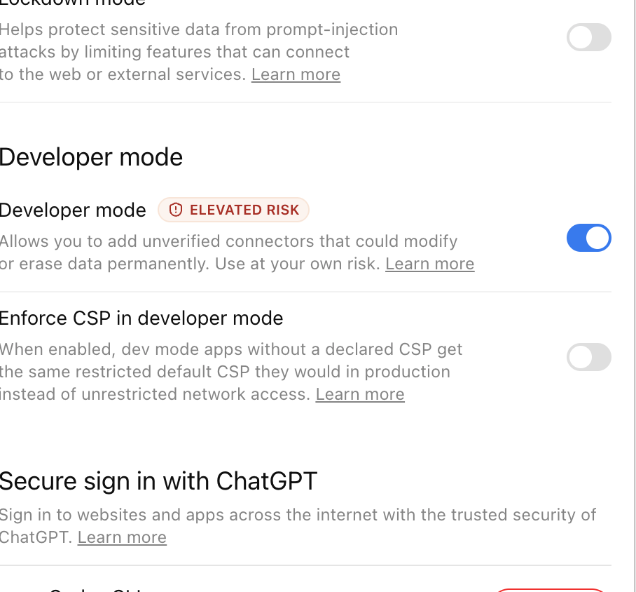
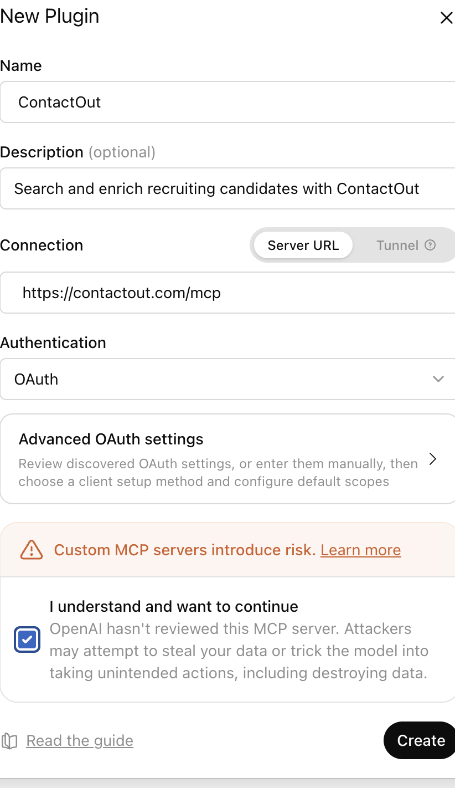
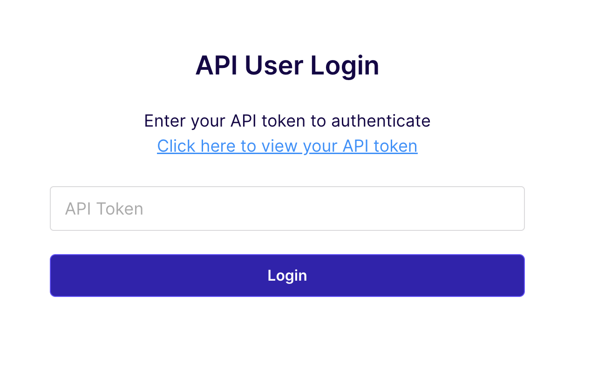
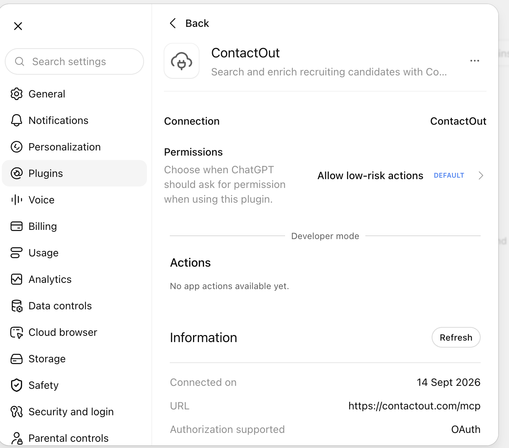

联系人
0 位联系人
本批已选择 0 人（建议每批不超过 5 人）
Connections Map
人才分布
按公司 / 学校分布
人才档案
Linked MCP
LinkedIn 官方授权接入指引
手动登录与授权流程
- 点击下方按钮，在新窗口手动登录 LinkedIn。
- 前往 LinkedIn Developer Portal 创建应用并申请官方 API 权限。
- 配置 OAuth 回调地址，由你本人确认授权。
- 将获批的官方连接器配置到 MCP；APP 不接收或保存密码、验证码和 access token。
说明：LinkedIn 官方 API 是否提供个人私信权限，以实际审批结果为准。未获官方授权时，请使用人工确认发送。
Word 群发邮件
用 Excel 联系人表和 Word 话术，快速完成邮件群发
Word 群发
上传联系人表格和联系话术，检查后直接使用本机 Word 中已配置的 Outlook 邮箱发送。
请选择上面两个文件。
不需要重新打开或登录邮箱；文件只在本机处理，发送由你确认。
会议记录
录音、转写并按模板整理会议纪要
ContactOut with ChatGPT
把 ContactOut 官方 MCP 连接到 ChatGPT
连接后，可让 ChatGPT 根据职位、技能、公司和地区等关键词批量搜索候选人，并导出候选人名单。
首次连接与 ChatGPT 批量搜索点击展开 / 收起全部内容
首次连接：照着做即可
打开开发者模式
Settings → Security and login → Developer mode，把开关打开。

创建 ContactOut
进入 Settings → Plugins → Browse plugins，点击右上角 +，按下图填写并点击 Create。

ContactOutSearch and enrich recruiting candidates with ContactOutServer URLhttps://contactout.com/mcpOAuth勾选风险提示；不要修改 Advanced OAuth settings。
登录并完成连接
粘贴你自己的 ContactOut API Key（这里也叫 API Token），点击 Login。

看到 Connection: ContactOut 和 OAuth，即连接成功。若 Actions 暂时为空，点击 Refresh，再新建聊天。

安全提醒：API Key 只填在 ContactOut 登录页面，不要填进 Server URL，也不要发给别人。
批量搜索与导出
填写筛选条件，页面会生成一条结构化指令。复制到已连接 ContactOut 的 ChatGPT 中运行，再把返回的 JSON 粘贴回来即可预览、加入联系人并导出。
填写关键词后，点击按钮生成指令。
导入 ChatGPT 返回结果
要求 ChatGPT 返回 JSON。支持数组，或 ContactOut API 的 profiles 对象。
尚未生成搜索任务。
批量补全私人邮箱
需要 Production API 权限没有 ContactOut Production API Key 或 Data Enrichment 权限时，此流程无法取得真实私人邮箱。
适合已有一批 LinkedIn 账号且已开通批量补全权限的情况。只保留 ContactOut 实际返回的私人邮箱，没有结果统一写“未公开”，不会用工作邮箱代替。
上传 CSV，或把 LinkedIn 链接每行粘贴一个。系统会自动去重。
尚未导入 LinkedIn 名单。
把上一步生成的 CSV 上传到 ContactOut 网页端，完成补全后下载结果 CSV。
把 ContactOut 网页端下载的结果 CSV 上传到这里。
连接后可以这样问
如果看不到右上角的 +，先确认 Developer mode 已开启，再返回 Browse plugins。创建完成后请新建聊天，让 ChatGPT 加载 ContactOut 工具。
消息模板
使用 {GivenName} 自动替换称呼
预览
设置
本地应用偏好
数据管理
清空前请先导出备份。此操作不可撤销。